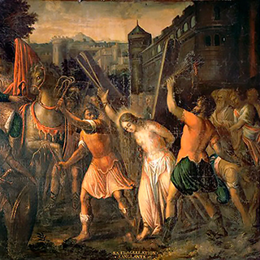

En Alesia, en el territorio de los eduos, en la Galia, santa Regina, mártir (s. inc.).
Los niños piden -al menos así lo hacían en tiempos pasados- a los mayores que les cuenten un
cuento a la hora de
dormir. La condescendencia de los que les quieren, procurando su bien dormir, les lleva a
ilustrar su imaginación
con historias que unas veces son sólo producto del genio humano y otras... adornan la verdad de
hechos ocurridos
en la ordinariez de la vida con amplificaciones que hacen fantástica, amable y hasta apasionante
la historia real. No
sé si la historia de Regina servirá para rellenar esos momentos previos al descanso nocturno de
los pequeños, pero
no me cabe duda de que sí servirán a los adultos para que detengamos un momento nuestro ardoroso
caminar.
Regina es palabra latina que se vierte al castellano por Reina. Así se llamaba nuestra
protagonista de hoy. Fue una
francesita hija de padre romano y de madre gala. Era el tiempo del Imperio. Cuando tenía quince
años conoció a
Cristo y le entregó su corazón, se bautizó y decidió darle para siempre su virginidad..
Es hermosa en demasía. El prefecto romano se enamoró de ella al verla. En su presencia, Regina
confiesa su fe.
Desde este momento comienzan las dificultades para la fidelidad. Fue puesta en la cárcel y con
una amenaza: al
regreso del prefecto, que necesariamente ha de ausentarse, ella debe haber cambiado de religión
o conocerá el furor
romano.
Sucede a la vuelta del personaje lo previsible con la gracia de Dios. Ella se niega a sacrificar
a los ídolos, llegan las torturas, los hierros arañan y cortan su carne. También hay prodigios
del Cielo: se producen terremotos, se oyen voces celestiales... hasta una paloma se acerca para
consolarla, darle ánimos y curarla.

Nombre:
Regina (Femenino)
Celebran:
Regina
Falleció:
En Autun, en el actual Francia
Celebración:
7 de septiembre
El ejemplo es tan llamativo que la gente se convierte a centenares. Por fin, es degollada.
La candidez de la historia narrada, pletórica de elementos hiperbólicos y de adornos donados por
la fantasía, expone un drama común y diario de mucha gente que bien merece
la atención y el mimo del poeta, me refiero a todos esos que están dispuestos en serio a dar la
vida por la fe que tienen y, llegado el momento, darla.